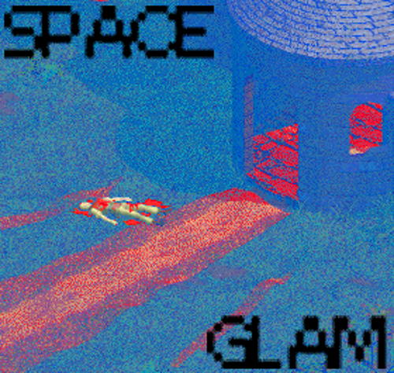

A:/bin/space_glam.exe
Space Glam: Heroes of the Mighty, Star Shining 2!
Welcome! We're . We make YouTube videos and stream on Twitch. Check out our series Zack Lazer.
ようこそ！私たちはスペースグラムです。 YouTubeビデオを作成し、Twitchでストリーミングします。私たちのシリーズZack Lazer.をチェックしてください。
Space Glam is Daniel, Joshua and Nina. We create videos for Twitch and YouTube with some big projects planned. Tune in to watch Daniel die a lot playing Mario or to watch us build our set for a Space Sci Fi YouTube show about pop culture.
We love a lot of different media, and we aim to look at entertainment and discourse, and get real philosophical about where one ends and the other begins.
If you want you can take a look at our Amazon list of some items we need for our productions